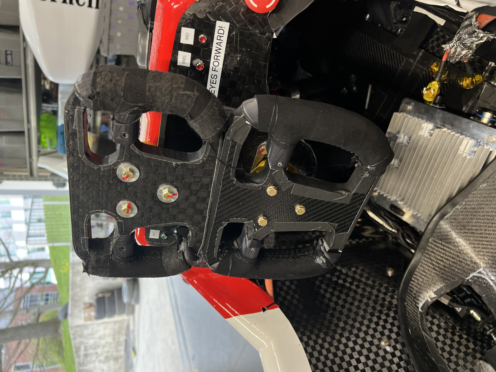
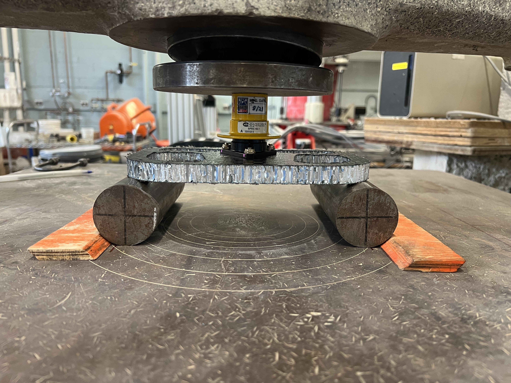

Steering Wheel — Carbon Sandwich Panel
Ergonomics Subteam · Cornell Racing
2025 and 2026 competition steering wheels

Three-point bend test setup
Designed and fabricated the 2026 Cornell Racing steering wheel through multiple driver-tested iterations. The goal was to cut weight from the previous year while keeping the wheel strong enough to handle real race loads and improving how it actually feels to drive with.
To validate the panel material, I ran three-point bend tests across four different carbon fiber sandwich layup configurations. All four panels cleared the 700N structural threshold, so I selected the lightest one that still passed. The final wheel came in 30% lighter than the prior year with a 32 N/g strength-to-weight ratio.